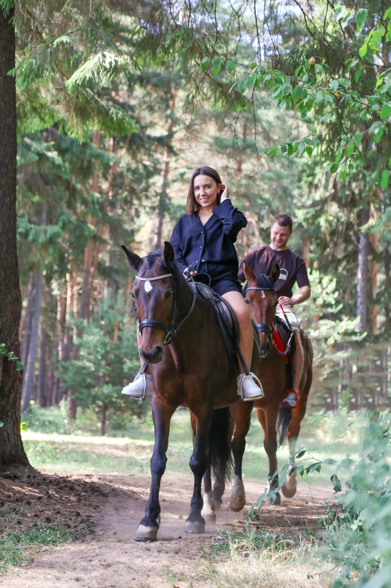
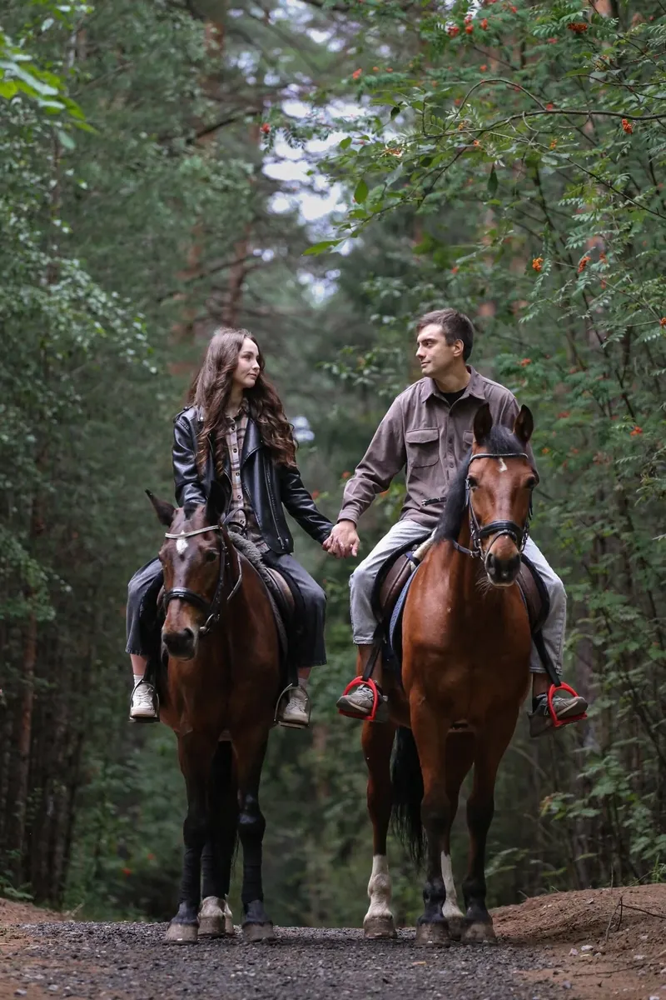
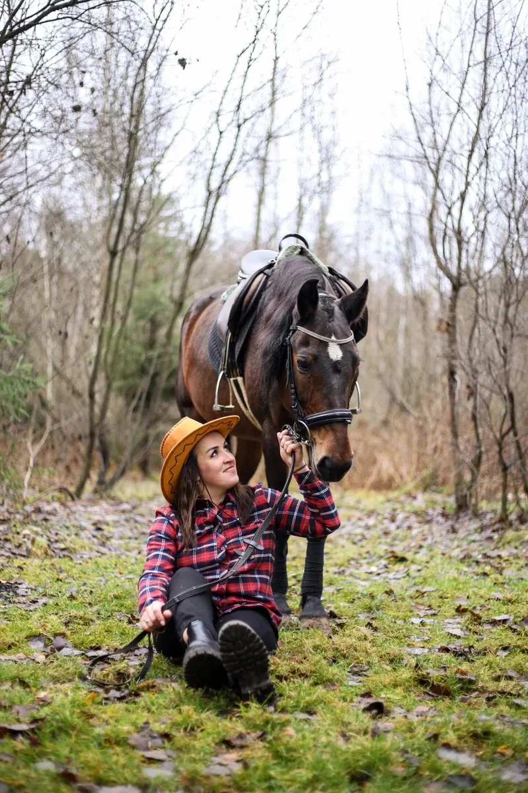
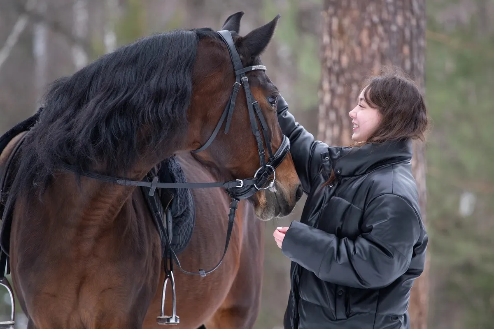

Конный клуб · Пермь
Конёк-Горбунок: прогулки и активный отдых в Перми
Программы, цены и запись на нужную дату - в одном сообщении.
- Запись одним сообщением
- Ждём: ежедневно, 09:00–21:00
- 4,6 и 14 отзывов на Яндекс.Картах

Направления и цены
Стоимость назовёт администратор при записи.
Что можно выбрать
- Конная прогулка по Балатовскому паркув отзыве: ухоженные и спокойные лошадиуточнить
- Романтическая прогулка на двоихв отзыве: с фотосессиейуточнить
- Прогулка с фотосессиейв отзывах: клиенты хвалят фотоуточнить
- Обучение и пониуказано в особенностях карточкиуточнить
- Иппотерапияуказано в особенностях карточкиуточнить
Как записаться
- 01
Пишете нам
Выберите направление, дату и время в форме ниже или напишите в мессенджер.
- 02
Уточняем детали
Администратор подтверждает время и отвечает на вопросы.
- 03
Приходите
Адрес: Пермь, 2-я Гамовская улица, 100.



Что пишут гости
Спокойные лошади
В отзыве: важно для первого опыта.
Внимательные инструкторы
Гости пишут, что всё объяснили и помогли забраться на лошадь.
Быстрая обратная связь
В отзыве: вежливая и быстрая обратная связь.
Отзывы с Яндекс.Карт
«Супер, остались только положительные эмоции. Лошади ухоженные, вежливая и быстрая обратная связь. Спасибо отдельное за крутые фото!»
Мария Noname · 27 августа
«Очень классная прогулка с фотосессией у нас была! Милые и внимательные девушки и очень обаятельные лошади ☺️ Остались очень довольны, хотим повторить еще и летом!»
alenka latypova · 11 декабря 2025
«Отличное место, чтобы получить заряд хорошего настроения и новые впечатления! Прогулка просто класс! Инструкторы всё объяснили, покатались по лесу, а после прогулки покормили лошадей. Отдельное спасибо вашим инструкторам за фотографии и дружелюбие! Нам всё оочень понравилось. А красавец Камай просто покорил сердце!»
Инкогнито 7276 · 20 марта 2024
Отзывы с карточки на Яндекс.Картах.
Частые вопросы
Как записаться?
Выберите направление, день и время в форме на странице или напишите в мессенджер. Администратор подтвердит запись.
Где вы находитесь?
Пермь, 2-я Гамовская улица, 100. ежедневно, 09:00–21:00.
Сколько это стоит?
Стоимость назовёт администратор при записи. Актуальные цены уточняйте у него.
Запишитесь - ответим в течение дня
- Адрес
- Пермь, 2-я Гамовская улица, 100, Пермь
- Часы
- ежедневно, 09:00–21:00
- Телефон
- +7 (902) 805-58-85